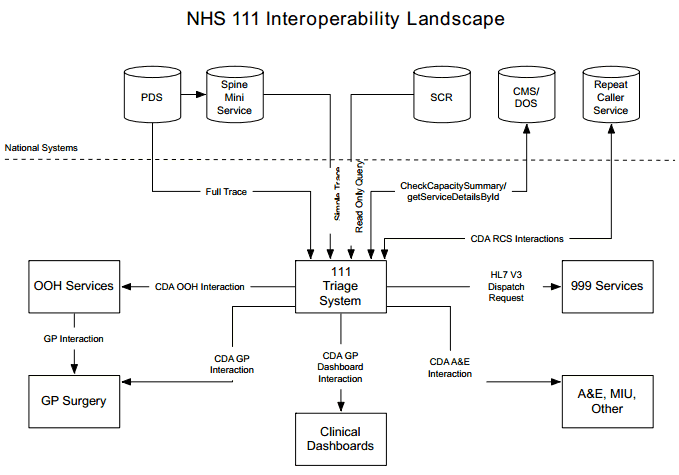

This section provides a summary view to allow readers a familiarisation with the key aspects which will aid in the understanding of the document contents.
The solution covers the mechanism for the transfer of triage information between the NHS 111 call handling organisations as well as to the various health service providers including ambulance trusts, Out Of Hours (OOH) services and the Repeat Caller Service.
The overall NHS 111 solution allows the call handler to direct for different forms of medical care and to make this available at the most relevant point of care for the patient based on the results of triage. This can be in the form of an ambulance dispatch, referring to OOH / urgent care services or simply providing medical information amongst other outcomes.
This document focuses on the technical elements of information exchange & specifies a standard mechanism to incorporate this implementation. The solution architecture can be seen in Figure 1.
